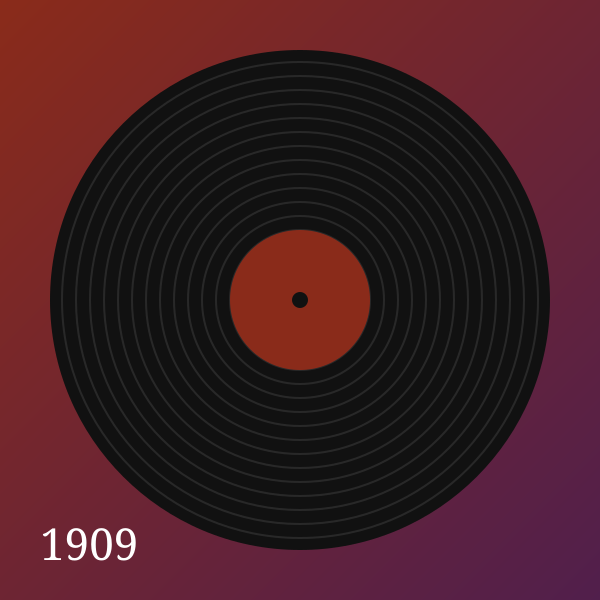

Mardiros Der Sarkis Tashjian, “Himi El Lrenk” (Columbia E529-4100, 1909)

Background: Armenian online songbooks attribute a song under this title to Raphael Patkanian's nineteenth-century poem “The Death of Vardan Mamikonian.” A published song-family text asks whether Armenians should remain silent while their land and arms are taken, chains are forged, and the community is driven from its homeland; it ends by rejecting silence and calling for resistance.
Proposed role: Collective resistance / refusal of silence